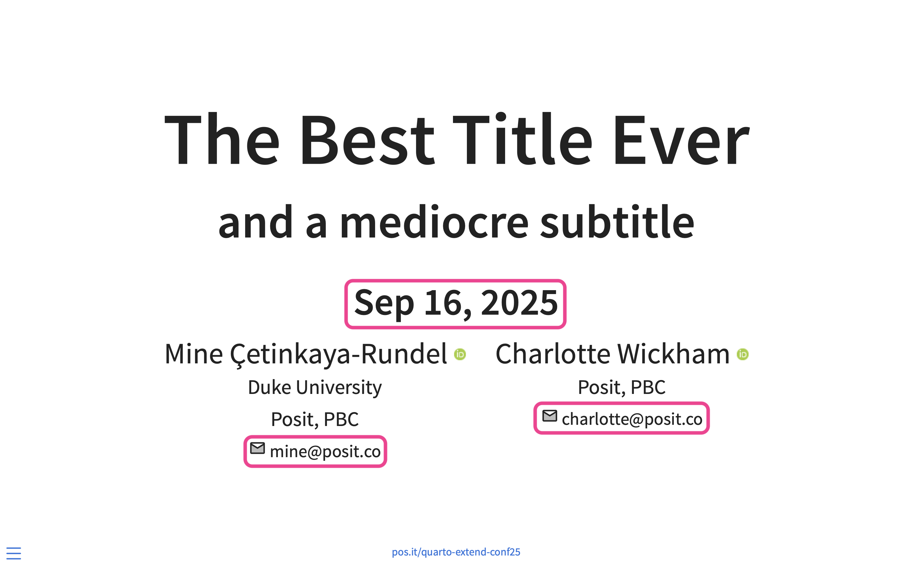
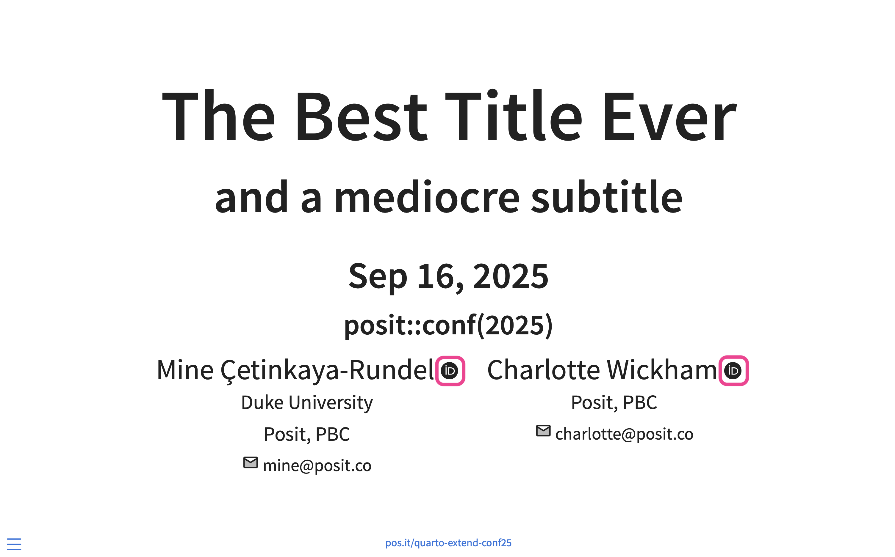
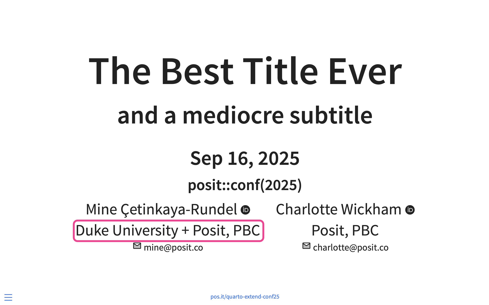
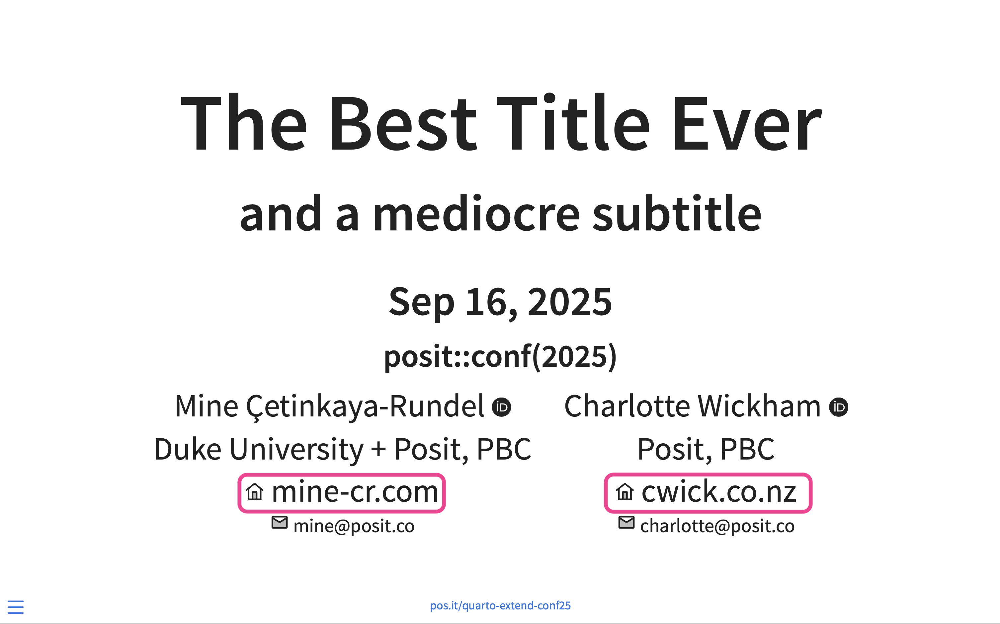
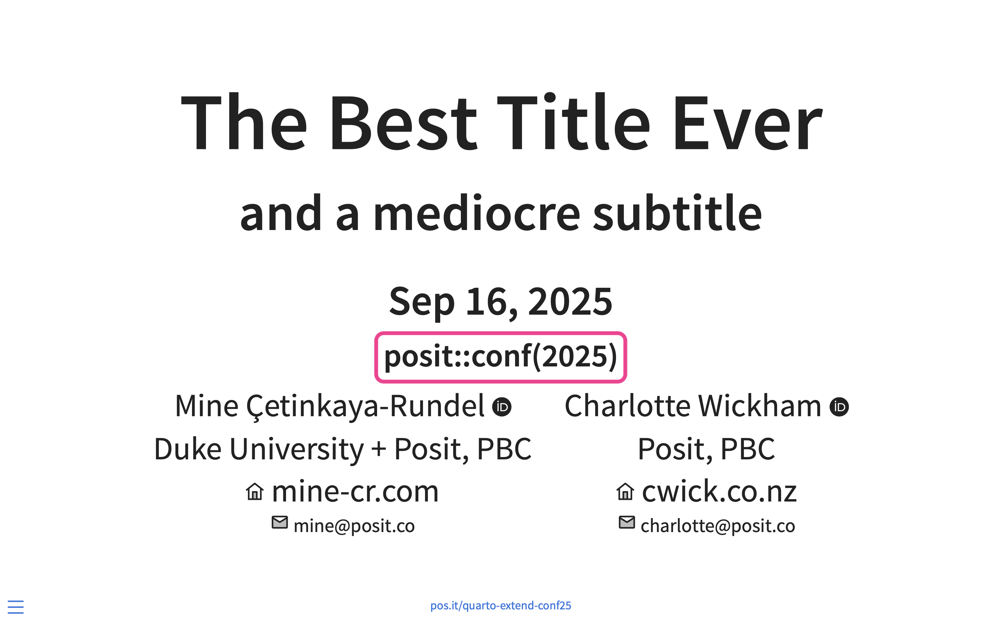
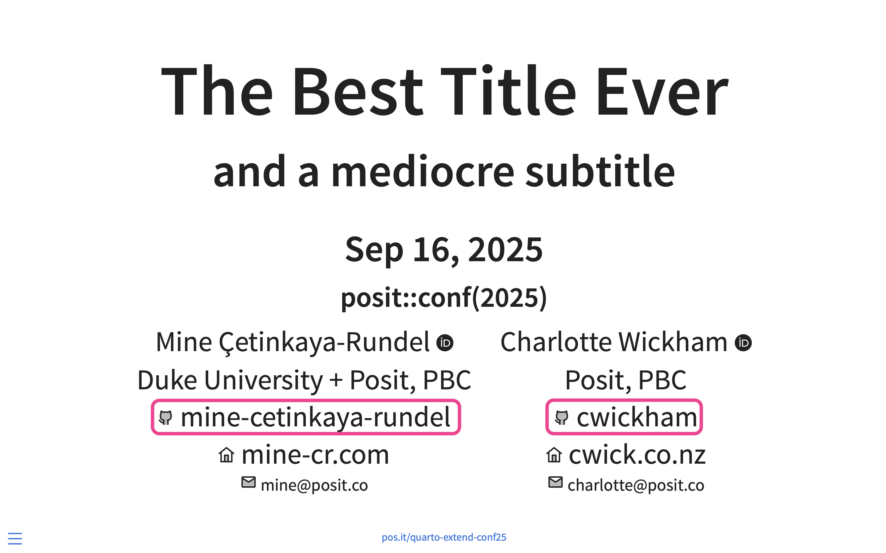
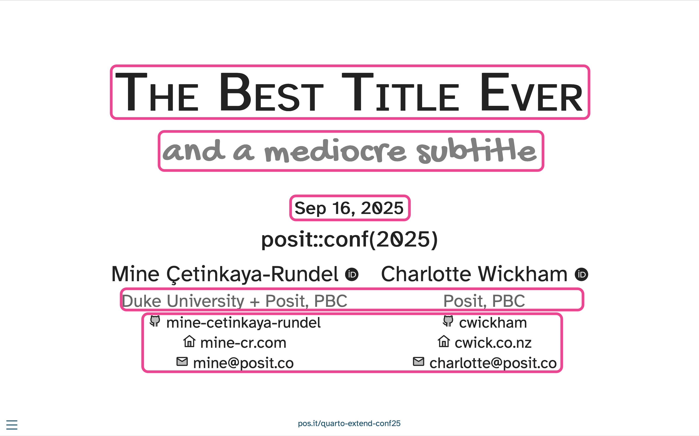
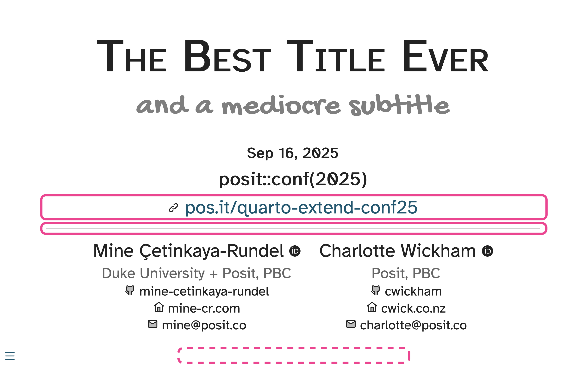

Extending Quarto workshop @ posit::conf(2025)
Quarto uses Pandoc templates to generate the rendered output from a markdown file.
A Pandoc template is a mix of format specific content and variables, where the variables are replaced with their values from a rendered document
Usage: Provide your custom template for complete control of the final output:
Replacing an entire template offers full control of output but comes with the risk of omitting required variables that can break Pandoc/Quarto features.
Safer approaches:
Selectively replace partials that exist within the master LaTeX or HTML template
Replace the entire LaTeX or HTML template, but then include partials provided with Quarto to ensure that your template takes advantage of all Pandoc and Quarto features
Quarto provides built in templates that are composed of a set of partial template files for LaTeX / PDF and HTML output
You can replace portions of Quarto’s built in template which allows you to customize just a portion of the template without needing to replace it entirely
When using a partial for modifying the title in LaTeX, Quarto will use the built in template but replace the title portion of the template with the provided partial:
The name of the partial file must match the name of the partial in the built in template that you want to replace.
Tip
Provide an empty file as a partial to opt out of some features without modifying the whole main template.
Use built in partials when composing your own template, which allows you to include specific features from Quarto and Pandoc without copying and maintaining the entire template code:
They exist! https://quarto.org/docs/journals/templates.html
babel-lang.tex
before-bib.tex
biblio.tex
biblio-config.tex
citations.tex
doc-class.tex
graphics.tex
after-body.tex
before-body.tex
pandoc.tex
tables.tex
tightlist.tex
before-title.tex
title.tex
toc.tex
after-header-includes.latex
common.latex
font-settings.latex
fonts.latex
hypersetup.latex
passoptions.latexdefinitions.typ
typst-template.typ
page.typ
typst-show.typ
notes.typ
biblio.typhtml.styles
html.template
metadata.html
styles.html
template.html
title-block.html
toc.htmlmetadata.html
title-block.html
toc.html
styles.html
toc-slide.html
title-slide.htmltitle-slide 💅with plenty of meta data
title: The Best Title Ever
subtitle: and a mediocre subtitle
author:
- name: Mine Çetinkaya-Rundel
url: https://mine-cr.com
orcid: 0000-0001-6452-2420
email: mine@posit.co
affiliations:
- name: Duke University
- name: Posit, PBC
- name: Charlotte Wickham
url: https://cwick.co.nz
orcid: 0000-0002-6365-5499
email: charlotte@posit.co
affiliation:
- name: Posit, PBC
date: 2025-09-16
footer: "[pos.it/quarto-extend-conf25](https://pos.it/quarto-extend-conf25)"
format: revealjsExample: 02-partials/examples/1-start-here
title-slide partialFind the default title-slide.html partial in the Quarto GitHub repo, copy it to your exercise folder, and include it as a template-partial in your YAML.
Render your slides and observe the difference, or lack thereof!
Exercise: 02-partials/your-turns/1-default-title-slide
03:00
Move date to under the subtitle and format it as a 3rd level heading h3.
Add an envelope icon next to the email address; e.g., one from https://icon-sets.iconify.design/line-md/?icon-filter=email.

Example: 02-partials/examples/2-modify-date-author-email
Modify how the ORCID logo shown to match the color scheme of the title slide; use this one instead: https://icon-sets.iconify.design/simple-icons/?icon-filter=orcid.

Exercise: 02-partials/your-turn/2-modify-orcid
05:00
Display multiple affiliations on the same line, separated by +.

Exercise: 02-partials/your-turn/3-modify-affiliations
03:00
Display author url on the title slide, next to a home icon, e.g., https://icon-sets.iconify.design/line-md/?icon-filter=home.

Exercise: 02-partials/your-turn/4-modify-author-url
07:00
Add a new field, venue, to the YAML and place it under the date.

Exercise: 02-partials/examples/3-add-venue
Add GitHub usernames to the document YAML with a field called github under author.
Update title-slide.html to place GitHub usernames along with the GitHub logo under affiliations.

Exercise: 02-partials/your-turn/5-add-github
07:00
Make the title slide match the screenshot in below. Specifically:

Exercise: 02-partials/your-turn/6-style
07:00
Remove the link to slides from footer (using include-after-body) and use that field in the partial to be displayed below the venue.
Display content from footer under venue with a link icon, e.g., https://icon-sets.iconify.design/line-md/?icon-filter=link.
Add a horizontal line below the slide URL.

Exercise: 02-partials/examples/4-hr-footer